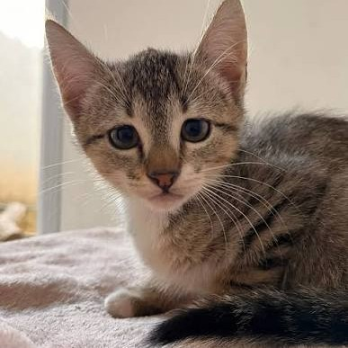

Na Quatro Patas, seu melhor amigo recebe todo o carinho e atenção que merece. Oferecemos cuidados veterinários pensados para promover mais saúde, bem-estar e qualidade em todas as fases da vida. 🐾
Agendar Consulta
Agendar Exame
Somos 4,8 ⭐ no Google!
Veja o que nossos clientes dizem sobre a Quatro Patas.
Mariana S.★★★★★
“Atendimento maravilhoso! Minha cachorrinha foi recebida com muito carinho. Fiquei tranquila sabendo que ela estava em boas mãos.”
Tutora da Mel
Rafael M.★★★★★
“Equipe atenciosa, ambiente acolhedor e profissionais que realmente amam o que fazem. Recomendo de olhos fechados!”
Tutor do Thor
Especialidades Veterinárias
Medicina Felina
Cirurgia Veterinária
Odontologia Veterinária
Dermatologia Veterinária
Oftamologia Veterinária
Ortopedia Veterinária
Acupuntura Veterinária
Fisioterapia Veterinária
0 Anos de Experiência
0 Pets Felizes
0+ Clientes
0 Profissionais Experts
Conheça a Quatro Patas
Cuidado, Amor e Bem-Estar para o Seu Pet
Olá, nós somos a Quatro Patas! 🐾 Somos apaixonados por animais e acreditamos que cada pet merece cuidado, carinho e atenção especial. Nossa missão é oferecer um atendimento acolhedor e de qualidade, cuidando da saúde e do bem-estar dos seus melhores amigos em cada etapa da vida.
Contamos com profissionais dedicados e uma estrutura preparada para proporcionar conforto, segurança e tranquilidade tanto para os pets quanto para seus tutores. Aqui, cada animal é tratado com todo o amor e respeito que merece, porque sabemos que eles são muito mais do que animais de estimação: são parte da família!
check_small Atendimento Personalizado
check_small Cuidado e Carinho em Cada Consulta
check_small Saúde e Bem-Estar Animal
Por que Nos Escolher ?
Estamos sempre em busca do melhor para nossos clientes e seus pets, com atendimento humanizado e serviços de excelência.
Experiência dos Veterinários
90%
Qualidade do Serviço
90%
Satisfação do Seu Pet!
90%
Testemunho de Nossos Pacientes

Esse é o Félix, um gatinho muito corajoso! Ele foi adotado e tem uma família linda agora. Preocupados com o bem estar dele, os tutores o levaram no Quatro Patas Tatuapé para fazer uma consulta filhote, em que recebeu todas as orientações necessárias para cuidar do novo filhotinho. ❤
Félix já foi castrado e agora está se recuperando com todo o amor em casa, seguindo todas as orientações da Dra. Ana Elisa, veterinária dele.
Félix
Últimas Postagens
Adestramento de Cães: Tudo o Que Você Precisa Saber para Educar Seu Melhor Amigo
Educar um cão vai muito além de ensinar comandos como sentar, deitar e dar a pata. O adestramento é uma parte importante da convivência entre tutores e animais, pois ajuda a estabelecer limites, desenvolver a confiança e tornar o dia a dia mais tranquilo e seguro para todos. Com paciência, consistência e técnicas adequadas, é possível ensinar bons comportamentos e fortalecer o vínculo com seu melhor amigo.
18 set
Alimentação Natural para Pets: Benefícios, Cuidados e Como Oferecer uma Dieta Equilibrada
A alimentação tem um papel fundamental na saúde, na disposição e na qualidade de vida dos nossos animais de estimação. Com tantas opções disponíveis e diferentes informações circulando pela internet, é natural que surjam dúvidas sobre qual alimento oferecer, quais ingredientes são seguros e como identificar a dieta mais adequada para cada pet. Afinal, cuidar da nutrição também é uma forma de demonstrar carinho e proporcionar uma vida mais saudável ao seu companheiro.
09 out
Saúde dos Pets: Como Cuidar do Seu Cão ou Gato e Garantir Mais Qualidade de Vida
Manter a saúde do seu pet em dia é uma das demonstrações mais importantes de amor e responsabilidade. Assim como nós, cães e gatos precisam de cuidados regulares, alimentação equilibrada, acompanhamento veterinário e atenção aos pequenos sinais que o corpo apresenta. Muitas vezes, mudanças discretas no comportamento, no apetite ou na disposição podem indicar que algo não está bem, por isso conhecer as necessidades do seu companheiro faz toda a diferença.
12 dez
Nossas Unidades
Tatuapé
R. Apucarana, 950 - Tatuapé, São Paulo - SP, 03311-001
(11) 9165-4000
(11) 6541-2500
Moema
Av. Macuco, 521 - Moema, São Paulo - SP, 04523-001
(11) 5051-2244
(11) 2033-3906
Santo Amaro
R. Verbo Divino, 1100 - Chácara Santo Antônio, São Paulo - SP, 04719-002